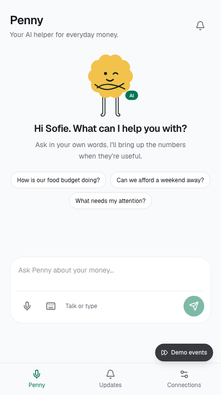

Claude Impact Lab · The person
Penny
Calmer
money days.
Busy families lose track of spending. Money becomes another source of stress.
For parents who want control without studying personal finance.
01 / 06Why it matters
33%
of adults worldwide met the survey's financial-literacy threshold.
Everyday money
should make sense.
The 2014 survey tested basic financial concepts.
Global context, not a Danish family statistic.
Source: S&P Global FinLit Survey report, 2015. Over 150,000 adults in more than 140 countries.
02 / 06The product
Ask Penny.
Understand your next step.
Start with your family's plan.
Set a budget, a buffer and a savings goal. Ask about your money in everyday language.
Food spending is our first use caseGet an answer you can check.
Claude explains your finances alongside calculated budget and goal cards. You confirm changes.
Bank and loan insights extend the planOur aim: Penny checks your finances and contacts you when something needs attention.
03 / 06Live demo · 60 seconds
"How is our
grocery budget doing?"
- Ask Penny by voiceHear an answer and see the matching budget card.
- Open a budget updatePenny explains it using the family's saved plan.

Synthetic financial data. Bank/Nexi connections and demo events are simulated. No real money moves.
04 / 06The change we want
Less stress.
More control.
Understand what's left.
Know what the family can spend and why.
Make progress together.
Choose practical changes toward a trip, a home or a savings buffer.
Intended outcomes. Tonight's prototype demonstrates conversation, saved plans and contextual budget cards. Family impact is still to be tested.
05 / 06Our 30-day impact plan · Owner: Julia
Test with
real families.
5 families
Target: at least 3 would use Penny regularly, with evidence of what helps.
- Weeks 1–2 · First real-world testSet a grocery budget, try simulated receipts and explore a savings goal. Check understanding and money stress.
- Weeks 3–4 · Improve and decideFix confusing suggestions. Compare with the baseline and decide what to build next.
Help us find pilot families and a receipt-integration partner.
06 / 06